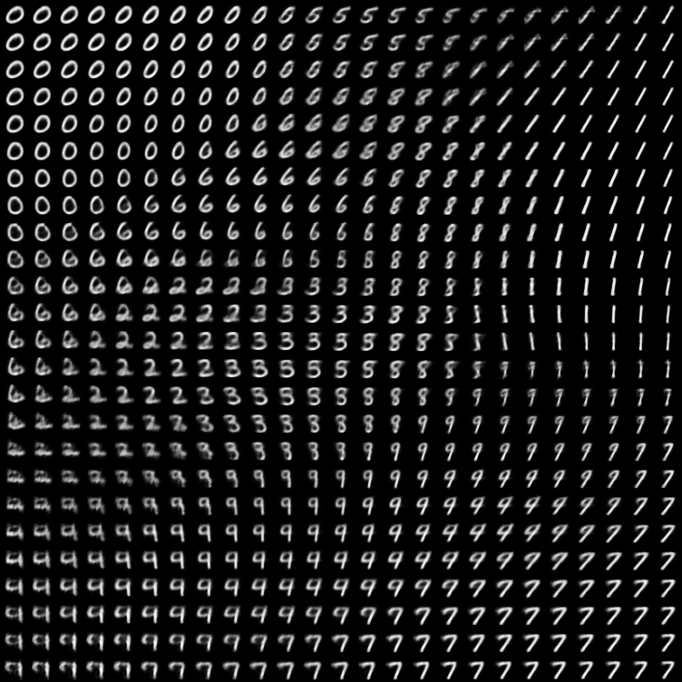

Generative Deep Neural Models
Agenda
- Discriminative VS Generative models
- Generative approaches
- Performances
- Applications
- Text-to-image generators
Discriminative models

Generative models
Discriminative VS Generative

Partition VS fit
Manifold hypothesis
Embedding space
on a lower-dimensional (embedding) space
keeping (and disentangling) the latent characteristics.
Generative approaches

Variational Auto-Encoders
 $$
\log p(x) \ge ELBO(x) = \mathbb{E}_{q(x|z)}\log p(x|z) - KL(q(z|x)||p(z))
$$
$$
\log p(x) \ge ELBO(x) = \mathbb{E}_{q(x|z)}\log p(x|z) - KL(q(z|x)||p(z))
$$
Normally distributed latents
$$ \mathcal{L}(x,\hat{x}) = \sum \|x - \hat{x}\|^2 - \frac{1}{2} \sum \left[ 1 + \log \sigma_i^2 - \sigma_i^2 - \mu_i^2 \right] $$ Autoregressive models
$$ p(x_0,\cdots,x_n) = p(x_0) \: p(x_1|x_0) \: p(x2|x_0,x_1) \cdots p(x_n|x_0,\cdots,x_{n-1}) $$- a vocabulary of embedding-vectors is trained
- keys are generated instead of pixels
- a decoder generates images from vectors
Vector-Quantized VAE
$$ \begin{eqnarray} \mathcal{E}(x,e) &=& \|sg[e]-E[x]\|^2 & \text{Good encoder} \\ \mathcal{C}(x,e) &=& \|e-sg[E(x)]\|^2 & \text{Good codebook} \\ \mathcal{D}(x,e) &=& \|x-D(e)\|^2 & \text{Good decoder} \\ \end{eqnarray} $$ $$\large \mathcal{L}(x,e) = \mathcal{E}(x,e) + \mathcal{C}(x,e) + \beta\mathcal{D}(x,e) $$Generative Adversarial Networks
Train directly a generator network $G$...
 $$\small
\mathcal{V}(G,D)=\min_G\max_D
\mathbb{E}_x\left[\log D(x)\right] + \mathbb{E}_z\left[\log(1-D(G(z)))\right]
$$
$$\small
\mathcal{V}(G,D)=\min_G\max_D
\mathbb{E}_x\left[\log D(x)\right] + \mathbb{E}_z\left[\log(1-D(G(z)))\right]
$$
Vector-Quantized GAN
Training issues
- Vanishing gradients
-
What about a very bad generator and a very good discriminator? - Sample diversity
-
How to enforce full distribution support coverage? - Convergence failure
-
Zero-sum game: Generator improves while Discriminator degrades.
"GANs May Have No Nash Equilibria", Farzan Farnia, Asuman Ozdaglar, MIT
Normalizing Flows
 $$x = z_0 \rightarrow f_1(z_0) = z_1 \rightarrow \cdots \rightarrow f_n(z_{n-1}) = z_n$$
$$x = z_0 = f_1^{-1}(z_1) \leftarrow \cdots \leftarrow z_{n-1} = f_n^{-1}(z_n)$$
$$x = z_0 \rightarrow f_1(z_0) = z_1 \rightarrow \cdots \rightarrow f_n(z_{n-1}) = z_n$$
$$x = z_0 = f_1^{-1}(z_1) \leftarrow \cdots \leftarrow z_{n-1} = f_n^{-1}(z_n)$$
being $\{f_i\}$ diffeomorphisms:

The loss function
$$ \begin{eqnarray} \theta &=& \arg\max_\theta \log p_\mathcal{X}(\{x_i\}) \\ &=& \arg\max_\theta \sum_i\log p_\mathcal{Z}\left(f(x_i)\right)+\sum_k\log\left|\det\left[Jf_k(x_i)\right]\right| \end{eqnarray} $$The challenge: flexibility + efficiency:


Score-based generative models
$$\small x_t \leftarrow x_{t-1} + \alpha\nabla_x\log p(x_{t-1}) + \sqrt{2\alpha}z_t \qquad z_t\text{white noise} $$Continuous DDPM using SDEs
$$ \large dx = f(x,t)dt + g(t)dw \\ \scriptsize \begin{eqnarray} f(\cdot):&& \text{Drift vector} \\ t:&& \text{Time} \\ g(\cdot):&& \text{Diffusion factor} \\ w:&& \text{Brownian motion} \\ \end{eqnarray} $$Classification performances
Samples complexity to reach the asymptotic error...
| Logistic regression: $O(n)$ | Naive Bayes: $O(\log n)$ |

Generation quality
Hard task, currently a research topic. Some common metric issues:- Slow
- Biased, comparing distributions requires many samples (~50k).
- Perceptual quality
- Difficulty assessing blurriness, noise, artefacts, ...
- Different media
- Do not work only with images: consider videos, text, audio, ...

Distribution adherence
Some common generator issues:- Memorization
- The model returns samples too similar to the training set.
- Mode collapse
- All generated samples are related to a restricted set of modes.
- Off manifold
- Generated samples lie outside the data manifold (eg. interpolation).
Embedding quality
Some desirable aspects of the empedding space:- Clustering
- The embedding clusters samples with similar characteristics.
- Compression
- Data compressed without significant information loss.
- Disentanglement
- Latent variables change different characteristics of data.

A new world of applications
- Capturing the distribution of data:
-
sample

project 
- Detecting outliers/anomalies:
-

"Autoencoders for Unsupervised Anomaly Segmentation in Brain MR Images: A Comparative Study", Christoph Baur, Stefan Denner, Benedikt Wiestler, Shadi Albarqouni and Nassir Navab
A new world of applications
- Latent-space feature editing:
-
"Interpreting the Latent Space of GANs for Semantic Face Editing", Yujun Shen, Jinjin Gu, Xiaoou Tang, Bolei Zhou
A new world of applications
- Image transformation via conditional generation:
-

"Image-to-Image Translation with Conditional Adversarial Nets", Phillip Isola, Jun-Yan Zhu, Tinghui Zhou, Alexei A. Efros
A new world of applications
- Aerial images semantic segmentation:
-
"What Is Pix2Pix and How To Use It for Semantic Segmentation of Satellite Images?" - Cell membrane and nucleus semantic segmentation:
-

"Cell Image Segmentation by Integrating Pix2pixs for Each Class", Hiroki Tsuda and Kazuhiro Hotta
A new world of applications
Super-resolution
Text-to-images, short story

- DALL-E, OpenAI, 2021-Feb-24, Autoregressive Model
-
"Zero-Shot Text-to-Image Generation" - GLIDE, OpenAI, 2021-Dec-20, Diffusion Model
-
"GLIDE: Towards Photorealistic Image Generation and Editing with Text-Guided Diffusion Models" - DALL-E 2, OpenAI, 2022-Apr-13, Diffusion Model
-
"Hierarchical Text-Conditional Image Generation with CLIP Latents"
CLIP
CLIP, OpenAI, 2021-Feb-26
Encoders with Transformers
unCLIP (DALL-E 2)
$$ p(x|y) = p(x,z_i|y) = p(x|z_i,y) \; p(z_i|y) \\ x\equiv\text{image} \quad y\equiv\text{caption} \quad z_i=f(x)\equiv\text{image embedding} $$Imagen
Google AI, 2022-May-23, Diffusion ModelParti
GoogleAI, 22-Jun-2022, Autoregressive Model
Parti
Scaling up the model.. with >1B samples
wearing an orange hoodie and blue sunglasses
standing on the grass in front of the Sydney Opera House
holding a sign on the chest that says Welcome Friends!
Conclusions
Generative models
They are rapidly becoming "human-like"...
...is this the start of a new era?
What about creative jobs like
illustration, narrative.. development?